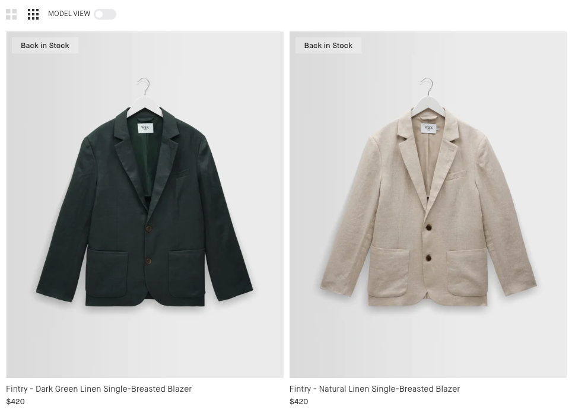
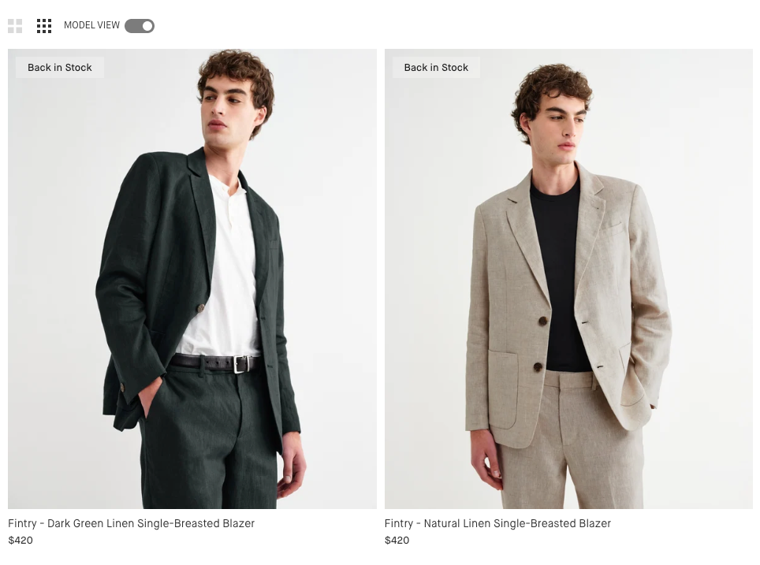

Model photos on suiting category pages lifted revenue per visitor by 50%.
Overview
Wax London showed hanger shots as the first image on suiting category pages. Most fashion sites do the same. We thought suits were different. Fit, shoulder line, and how the cloth hangs are hard to judge from a flat photo. Seeing the jacket on a person might help.
So we ran an A/B test on six suiting collections. Convert called it Model vs Product Image on suiting category pages. Variation 1 turned on Wax London's Model view toggle. The first tile image became a model shot. Copy, layout, and everything else stayed the same. One change: the photo. The test ran for 29 days, from 17 April to 15 May 2026. 14,115 people saw it, split 50/50.
Hypothesis
We wanted a straight answer. On suiting pages, does a model photo as the first image beat a product-only photo?
If we show a model wearing the suit as the first image, more people will look and buy, because they can see the fit and how it looks on a body.
A t-shirt is easy to guess. A suit is not. You cannot tell from a hanger how a jacket sits on the shoulders, or how the trousers break at the ankle.
Pages in this test: suits, blazers, tailored trousers, linen suits, single-breasted suits, and double-breasted suits on waxlondon.com.
Test setup
Two versions. Same six pages. Traffic split evenly. The only change was the first image on the product tile, using Wax London's Model view toggle. Off for control. On for the variation.


Results
After 29 days and 14,115 visitors, Variation 1 made more money per visitor, converted more, and put more items in the basket. People did not click more tiles on the listing. The gain showed up later: more checkouts, more items, more revenue.
| Metric | Original | Variation 1 | Difference |
|---|---|---|---|
| Revenue per visitor | $10.56 | $15.87 | +50.28% |
| Total revenue | $73,847 | $112,992 | +$39,145 |
| Purchase rate | 3.36% | 3.97% | +18.28% |
| Average order value | $315.59 | $390.98 | +23.89% |
| Products per visitor | 0.08 | 0.12 | +54.44% |
| Products per order | 2.33 | 2.97 | +27.32% |
| Add to cart | 4.82% | 5.20% | +7.83% |
| Begin checkout | 1.99% | 2.42% | +21.53% |
| Category tile clicks | 43.22% | 42.93% | −0.68% |
| Product page views | 49.76% | 48.81% | −1.9% |
| Bounce rate | 88.69% | 88.20% | −0.55% |
Revenue per visitor reached 98.18% confidence. Products per visitor reached 99.29%. Purchase rate was 92.55%. Listing clicks were flat. These figures come from Convert's main Purchase goal.
Engagement
The test ran on the listing, not the product page. Convert still tracked scroll after people opened a product. Variation 1 went further at every checkpoint. Hitting 100% scroll on the product page went from 4.92% to 6.02%. That is Convert's 22.49% lift, at 99.09% confidence.
| Depth | Original | Variation 1 | Lift |
|---|---|---|---|
| 25% down | 23.79% | 24.53% | +3.12% |
| 50% down | 15.46% | 16.07% | +3.94% |
| 75% down | 9.72% | 10.36% | +6.59% |
| 100% down | 4.92% | 6.02% | +22.49% |
These figures are product page (PDP) scroll, not listing (PLP) scroll. Convert's goals are named PDP Scroll Depth 25%, 50%, 75%, and 100%.
Insights
Purchase rate went from 3.36% to 3.97%. Revenue per visitor went from $10.56 to $15.87. A model shot shows shape and styling in a way a hanger cannot.
Average order value went from $315.59 to $390.98. Items per order went from 2.33 to 2.97. That looks like people building an outfit, not grabbing one piece.
Tile clicks were flat. Product page views were slightly down. The extra money came from what people did after they arrived: more checkout, more items, more spend.
Bounce went from 88.69% to 88.20%. That is basically unchanged. An early snapshot made bounce look like a risk. The finished data does not.
Caveats
01 Purchase rate is not at 95% confidence. Convert gives purchase rate 92.55%, revenue per visitor 98.18%, and products per visitor 99.29%. The money story lines up, but 235 vs 283 purchases is still the noisier number.
02 This is suiting only. 14,115 visitors is a fair sample for this category. It does not mean the same photo swap will work on t-shirts, knitwear, or belts.
03 It ran in spring. 17 April to 15 May 2026 sits in suiting and linen season. Do not scale the $39,145 gap to a full year. The percentage lifts are the part that should travel.
04 Convert had two purchase goals. The main Purchase goal shows revenue per visitor up 50.28%. A manual purchase goal shows a smaller lift, 19.45% at 81.49% confidence. Both favour Variation 1. This write-up uses the main goal.
Conclusion
The test is done. Revenue per visitor, products per visitor, and 100% product-page scroll all cleared 95% confidence for Variation 1. Listing clicks did not need to rise for revenue to rise.
Roll out Variation 1 on the six tested suiting collections. Watch revenue per visitor and order value in your live analytics for a few weeks after launch.
Try model-first tiles on shirts and formal extras. Keep the photo as the only change. Do not assume you need more listing clicks to make it worth doing.
Source: Convert experiment report, test ID 100138959, completed 15 May 2026. Written by Saabbir Hossain · saabbir.com/work/wax-london-model-vs-product